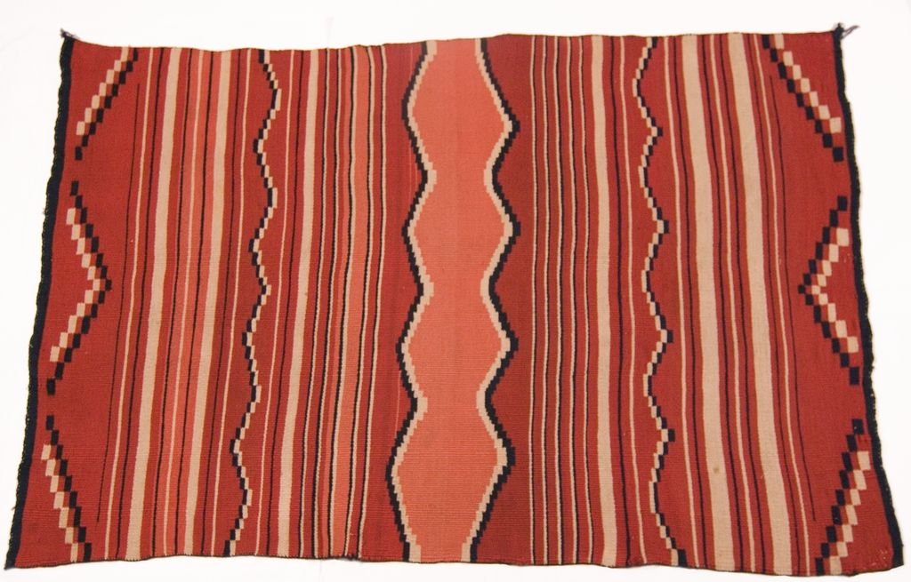

Textiles · 1074-102
Child's Blanket


The base is red wool with six zig-zag double-layer patterns of blue and white boxes at the edges, center, and sides. The remainder has straight bands of alternating cream and blue lines. Indigo.
Original post body gives ID as 1074-101; the title, image and catalog photo numbers indicate 1074-102.
Details